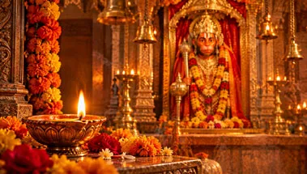
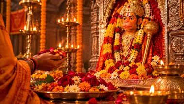
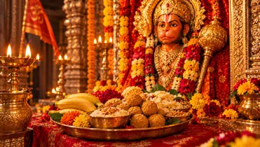
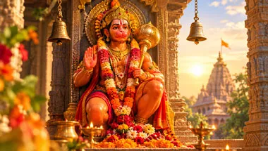

हनुमान जी की पूजा एवं आराधनाHanuman Puja & Worshipহনুমান জির পূজা ও আরাধনাहनुमान जी की पूजा एवं आराधना
Hanuman Puja & Worship
হনুমান জির পূজা ও আরাধনা
दीप, पुष्प, पारंपरिक अर्पण, चालीसा, मंत्र और प्रार्थना के साथ सरल भक्ति-विधि।
A devotional guide to simple Hanuman worship, offerings, prayer, Tuesday and Saturday traditions.
দীপ, পুষ্প, ঐতিহ্যবাহী নিবেদন, চালিসা, মন্ত্র ও প্রার্থনার সহজ ভক্তিমূলক পদ্ধতি।
पूजा का भाव
The Spirit of Puja
পূজার ভাব
हनुमान जी की पूजा में श्रद्धा, विनम्रता और सेवा-भाव महत्वपूर्ण हैं। परिवार, क्षेत्र और मंदिर के अनुसार पूजा की परंपराएँ भिन्न हो सकती हैं।
Hanuman worship combines devotion, humility and service. Customs can vary by family, region and temple tradition.
হনুমান জির পূজায় ভক্তি, বিনয় ও সেবাভাব গুরুত্বপূর্ণ; পরিবার, অঞ্চল ও মন্দিরভেদে রীতি ভিন্ন হতে পারে।
छह सरल पूजा चरण
Six Simple Puja Steps
ছয়টি সহজ পূজার ধাপ
4
पारंपरिक अर्पणOfferingনিবেদন5
मंत्र / चालीसाMantra / Chalisaমন্ত্র / চালিসা6
प्रार्थनाPrayerপ্রার্থনাपूजा सामग्री और अर्पण
Offerings and Puja Items
পূজার সামগ্রী ও নিবেদন

दीपक
Lamp
প্রদীপ
प्रकाश और प्रार्थना का सरल प्रतीक।
A simple symbol of light and prayer.
আলো ও প্রার্থনার সরল প্রতীক।

पुष्प
Flowers
ফুল
भक्ति का पारंपरिक अर्पण।
A traditional offering of devotion.
ভক্তির ঐতিহ্যবাহী নিবেদন।

सिंदूर
Sindoor
সিঁদুর
कई हनुमान परंपराओं में विशेष स्थान।
Important in several Hanuman traditions.
হনুমান ভক্তির বহু পরম্পরায় বিশেষ স্থান।

नैवेद्य
Naivedya
নৈবেদ্য
फल या पारंपरिक प्रसाद।
Fruit or traditional prasad.
ফল বা প্রসাদ।

मंगलवार
Tuesday
মঙ্গলবার
कई क्षेत्रों में विशेष हनुमान भक्ति का दिन।
A day strongly associated with Hanuman devotion in many traditions.
অনেক পরম্পরায় হনুমান ভক্তির বিশেষ দিন।
शनिवार
Saturday
শনিবার
अनेक भक्त शनिवार को भी हनुमान जी का स्मरण करते हैं।
Many devotees also observe Hanuman remembrance on Saturday.
অনেক ভক্ত শনিবার হনুমান স্মরণ করেন।
हनुमान जी के नौ पावन मार्ग
Nine Sacred Paths of Hanuman Bhakti
হনুমান জির নয়টি পবিত্র পথ
जय श्री राम • जय हनुमान
Jai Shri Ram • Jai Hanuman
জয় শ্রী রাম • জয় হনুমান
श्री हनुमान जी हमें भक्ति में स्थिरता, सेवा में विनम्रता, कर्म में साहस और धर्म के मार्ग पर चलने की शक्ति प्रदान करें।
May Lord Hanuman guide us toward steadfast devotion, humble service, courageous action and a life rooted in dharma.
শ্রী হনুমান জি আমাদের ভক্তিতে স্থিরতা, সেবায় বিনয়, কর্মে সাহস এবং ধর্মের পথে চলার শক্তি প্রদান করুন।